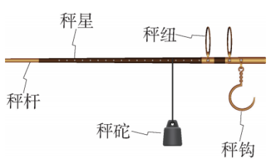
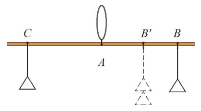
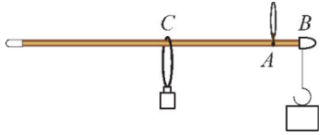

杆秤是中国独立发明的度量物体质量的衡器，如图1所示。它是我国古代劳动人民的智慧结晶。使用时，将被测物挂在秤钩上，一手提起秤纽，一手移动秤砣，使秤杆平衡，观察秤星，就可以读出物体的质量数。当有两个秤纽时，靠近秤钩的一个是称量较重物体时使用的。

准备一根稍长一些、两端粗细相同的筷子（或者硬的细塑料管）和4个相同质量的砝码。在筷子正中间点 \(A\) 处，拴细绳将筷子悬挂起来，发现筷子保持水平位置。分别在筷子两端 \(B\) 、 \(C\) 处（必须和点 \(A\) 等距离）各挂上一个砝码，如图2所示，此时筷子依然保持水平。

若在点 \(B\) 处挂上两个砝码，筷子还保持水平吗？若不能保持水平，扶住筷子，尝试移动点 \(B\) 处的砝码到图2中的点 \(B'\) 处，设法让筷子重新保持水平。分别测量点 \(C\) 、 \(B'\) 与点 \(A\) 的距离，它们有什么关系？若在点 \(B'\) 处再添上一个砝码呢？
杠杆平衡原理： 左边力矩 = 右边力矩。
设一个砝码重力为 \(G\)，\(AB = AC = L\)。
当 \(B\) 处挂两个砝码时：左边力矩 \(2G \cdot L\)，右边力矩 \(G \cdot L\)，不相等，所以不平衡。
为使平衡，需将两个砝码向左移动，设新力臂为 \(AB'\)，则 \(2G \cdot AB' = G \cdot L\)，解得 \(AB' = \frac{L}{2}\)。此时左边力矩 \(2G \cdot \frac{L}{2} = G \cdot L\)，等于右边力矩，杆秤平衡。
若在 \(B'\) 处再添一个砝码（共三个），则左边力矩 \(3G \cdot AB''\) 应与右边力矩 \(G \cdot L\) 相等，得 \(AB'' = \frac{L}{3}\)。
可见，力臂与所挂砝码个数成反比。
将上面的成果稍加改动，就可以制作一个简易的杆秤：将拴细绳的点 \(A\) 移动到距离点 \(B\) \(10\mathrm{mm}\) 处，在点 \(B\) 处加上秤钩并固定，如图3所示。设点 \(C\) 处可移动的砝码（秤砣）为 \(20\mathrm{g}\) ，秤杆质量不计。

分别就以下情形说一说你打算怎样设制秤杆上的秤星，使之可以测量一定范围内物体的质量：
(1) 若细绳和秤钩的质量都不计；
(2) 若细绳的质量不计，秤钩的质量为 \(5\mathrm{g}\)。
(1) 不计细绳和秤钩质量
设被测物体质量为 \(m\) g，挂在秤钩 \(B\) 处。秤砣质量 \(20\) g。根据杠杆平衡：
\[ m \times AB = 20 \times AC \]
已知 \(AB = 10\) mm，所以 \(10m = 20 \times AC\)，即 \(AC = \dfrac{m}{2}\) (mm)。
秤星位置与质量成正比：当 \(m=20\) g时，\(AC=10\) mm；当 \(m=40\) g时，\(AC=20\) mm，依此类推。可在秤杆上均匀刻上刻度，每增加10g，\(AC\) 增加5mm。
(2) 秤钩质量 \(5\) g
此时秤钩本身产生力矩。设被测物质量 \(m\) g，挂在 \(B\) 处，秤钩质量 \(5\) g 作用于 \(B\) 点。左边总力矩为 \((m+5) \times 10\)。右边为 \(20 \times AC\)。
平衡时：\((m+5)\times 10 = 20\times AC\)，得 \(AC = \dfrac{m+5}{2}\) (mm)。
当 \(m=0\)时（空秤），\(AC=2.5\) mm，即秤砣应放在距 \(A\) 点 2.5 mm 处才能平衡。刻度仍为线性：\(AC\) 与 \(m\) 是一次函数，所以刻度是均匀的，但零点偏移了2.5 mm。制作时可以先标记零点，然后每增加10g，\(AC\) 增加5mm。
杆秤是中国最古老的衡器之一，传说由鲁班发明，也有说起源于春秋战国时期。它利用杠杆原理，轻便易携，直到今天仍在一些地方使用。杆秤上的秤星通常用金属镶嵌，代表不同的刻度。古人制作杆秤时，需要精确计算秤砣的位置，这与我们今天学习的方程紧密相关。
模型思想： 用杠杆平衡原理建立方程模型。
抽象思想： 从具体操作中抽象出等量关系。
应用意识： 数学在传统工艺中的实际应用。
✨ 动手做杆秤，感受古人智慧，体会方程之美。✨